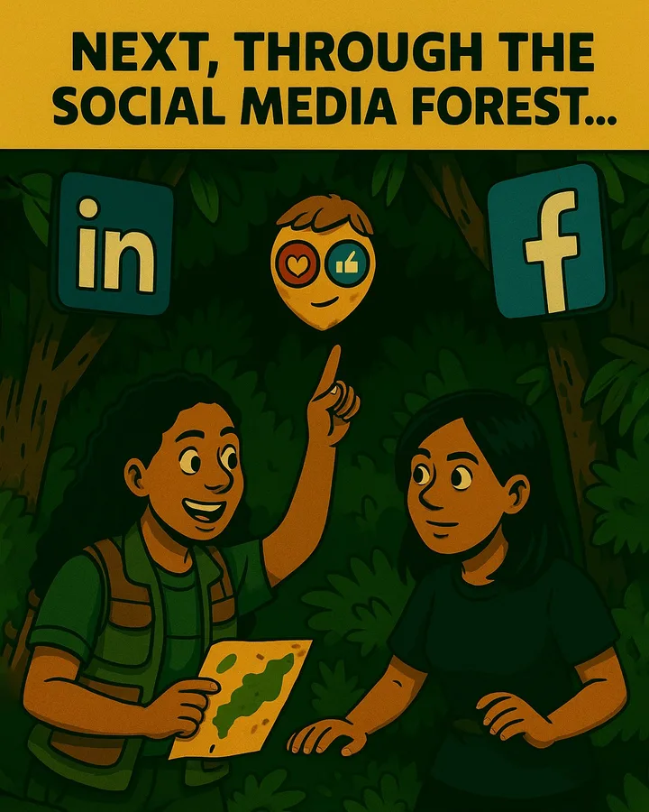

What belongs in a brand content kit?
A content kit should make posting easier, not create another folder of footage nobody knows how to use.



Start with content jobs.
Before filming, decide what the assets need to do. Some clips should explain the offer. Some should build trust. Some should show proof, process, or personality. A useful kit gives you a mix instead of ten versions of the same shot.
Capture for variation.
Good kits include vertical video, clean product or service shots, founder or team moments, behind the scenes clips, and short hook-friendly scenes that can become reels, stories, ads, or launch posts.
Leave with usable outputs.
The real value is not only the shoot. It is having edited clips, suggested captions, posting angles, and enough structure to keep the brand visible after the shoot day ends.
When the kit is planned around business use, content becomes a working asset instead of a one day production moment.